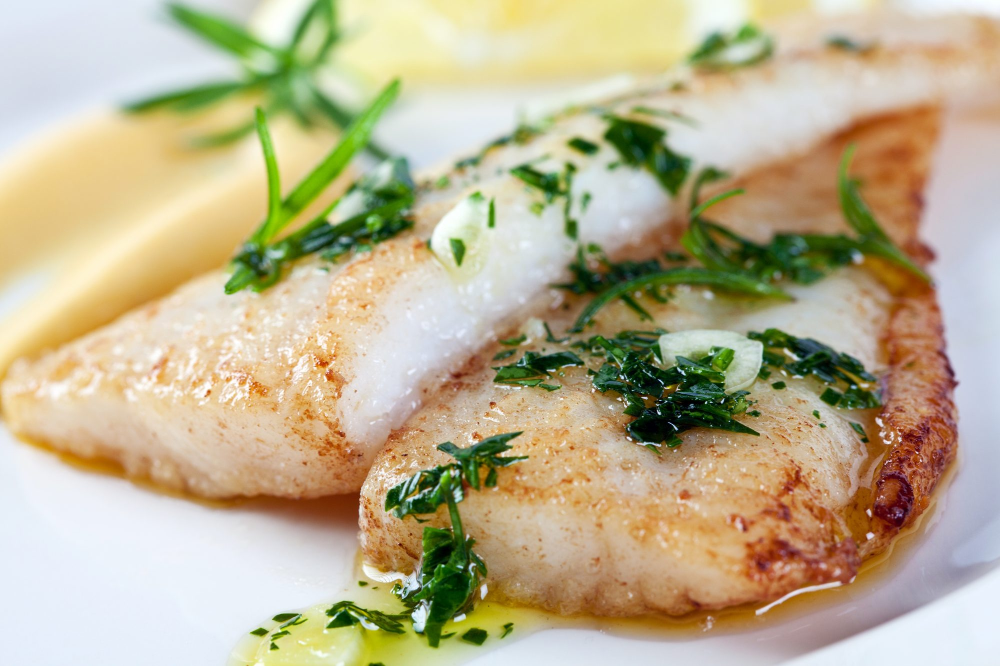

How to do fish filets in garlics
Information:
|

|
Cook:
|
15 min.
|
|
Servings:
|
4.
|
Description:
It is a Mexican recipe that consists of frying the fish -or the shellfish of your choice
in large amounts of garlic with oil. The piece is bathed in that preparation and then lemon
juice, pepper and onion are added to make it denser and richer. When it is prepared correctly,
it is so good that when the dish is finished you can even continue eating the remaining oil
and soak bread or tortillas in it to leave the plate clean.
Ingredients:
-
4 white fish fillets of 180 grams each.
-
1 lemon, its juice.
-
Salt and pepper to taste.
-
3 tablespoons of butter.
-
10 garlic cloves, finally sliced.
Directions:
-
Rocía los filetes de pescado con el jugo de limón, y espolvorea con sal y pimienta.
Deja reposar durante unos minutos.
-
Meanwhile, heat the butter in a large skillet over medium heat. Add the garlic and fry,
stirring constantly, until it has browned very slightly (it is very important that it
does not brown too much because it will turn bitter). Remove the garlic from the pan and
reserve.
-
Add the fish fillets to the same pan along with the butter and fry for 1 or 2 minutes
per side, depending on the thickness. Remove from pan and serve immediately. If desired,
add slices of garlic on top.
Credits:
Especially thanks to:
peopleenespanol
and
The odin project
to make this posible